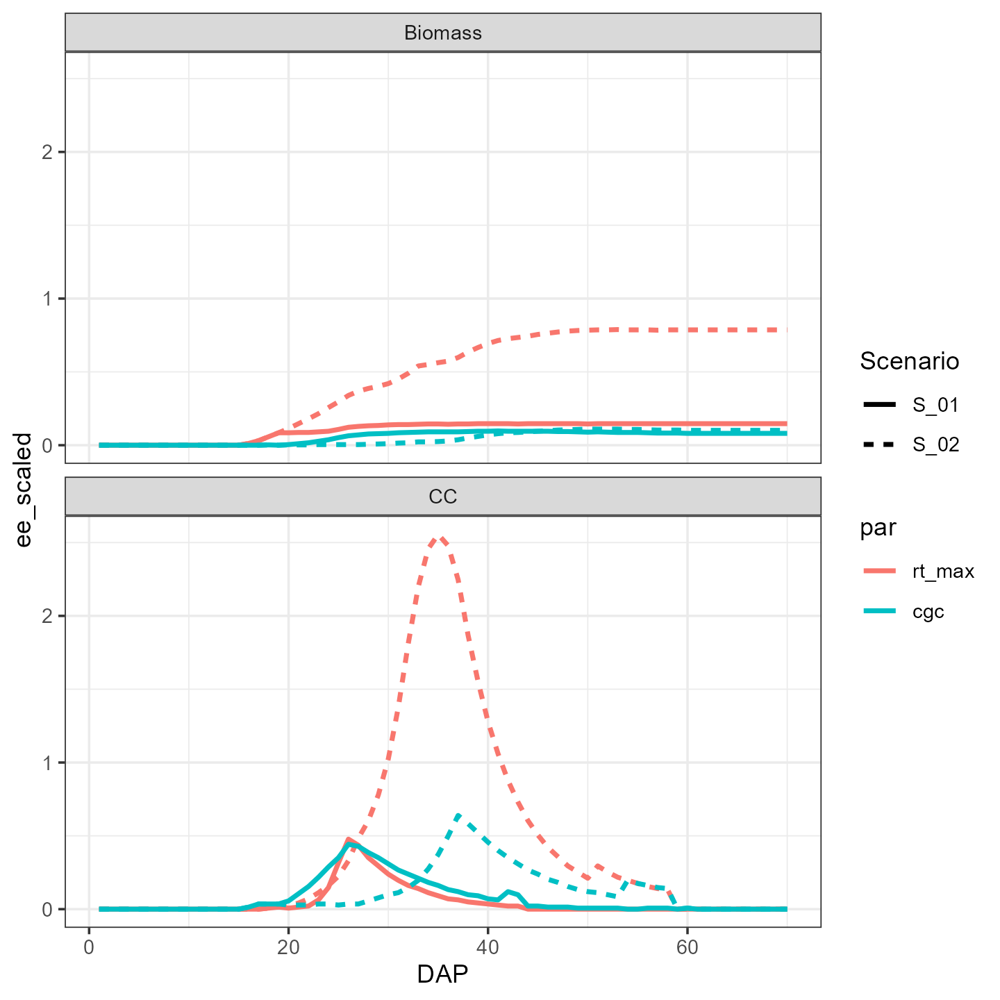
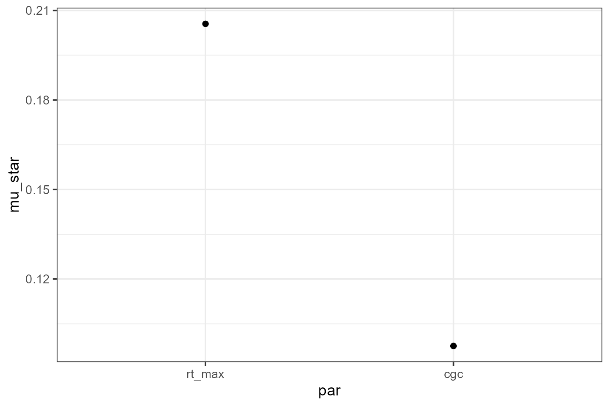
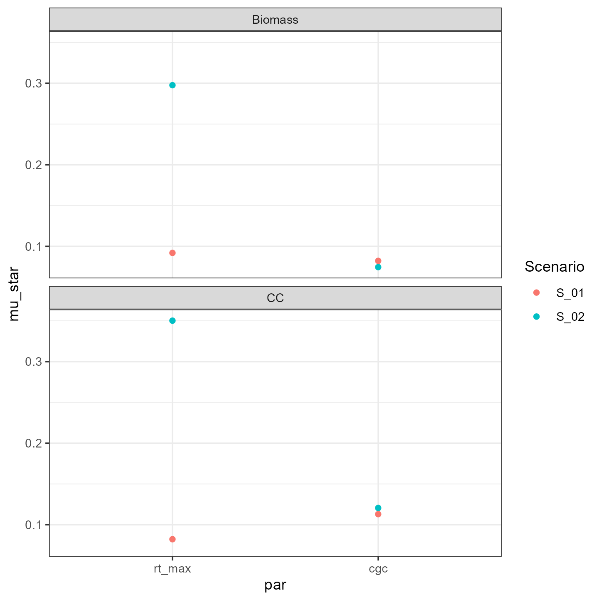
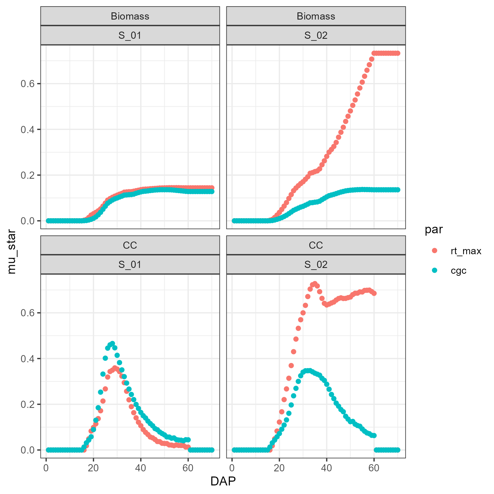

Sensitivity analysis example with Morris method
example-morris.RmdFirst run the code present in the
vignette("example-simulation"), to ensure that the paths
are correct and that the scenarios have been defined.
For sensitivity analysis using the Morris method, we made the
function aquacrop_morris(), which is built upon the
sensitivity::morris() function. This function designs the
Morris sampling scheme for r trajectories. In this case we
used \(r=20\), to limit the computation
time, but this should be set higher when using for specific objectives.
In this example we chose to study the effect of two parameters
cgc and rt_max (\(p
=2\)) on two output variables (\(y =
2\)) for spinach. Using the ‘one-at-a-time’ design, this will
generate \((p+1) \times r\)
simulations, from which the elemental effects are calculated (the
ee variable of the aquacrop_morris() output).
As this is typically a multidimensional matrix, we will melt
this into an interpretable dataframe using the
ee_to_dataframe() function, which is built upon the
reshape2::melt() function.
For more information, please check out the
sensitivity::morris() function, which is used as a basis
for our aquacrop_morris() function.
First we run the Morris method using the
aquacrop_morris() function:
p <- aquacrop_morris(situation = c("S_01", "S_02"),
backgroundpar=Spinach,
cycle_length = 70,
r = 20,
binf=c(rt_max = 0.12, cgc = 0.1),
bsup = c(rt_max = 0.55, cgc = 0.21),
daily_output = c(1,2),
outvars = c("Biomass", "CC"))
EE <- ee_to_dataframe(p = p, situation = c("S_01", "S_02"), cycle_length = 70)Now we have a tibble with following columns:
#> [1] "traject" "par" "DAP" "outvar" "ee" "Scenario"So we have the elemental effects for each combination of trajectory (traject - \(r = 20\)), parameter (par - \(p = 2\)), simulation time (DAP - \(t = 70\)), output variable (outvar - \(y = 2\)) and scenario (Scenario - \(s = 2\)): \(n = r \times p \times t \times y \times s = 11200\). The actual length of this data frame can be smaller if some of the trajectories have been rejected, because they were identical.
As a default, the elemental effects (ee) are scaled for
the parameter value. To make proper comparisons of sensitivity across
output variables, these should also be scaled by dividing by a
representative value for the respective output variable. As an example
we calculate here a scaler based on the 95% highest value
of all simulations done by the aquacrop_morris() function
for each variable.
You could also choose e.g. the median value (50%) instead of the 95%
value. As the scaling of the parameter value is already done in the
aquacrop_morris() function (based on the parameter ranges
that you provide), we don’t need a representative value there.
library(reshape2)
scaler <- melt(data = p$y, value.name = "value", varnames = c("simno", "DAP", "outvar")) %>%
group_by(outvar) %>%
summarize(yscale= quantile(value, 0.95))
EE <- EE %>%
left_join(scaler, by = "outvar") %>%
mutate(ee_scaled = ee/yscale)
ggplot(EE %>% filter(traject == 3)) +
facet_wrap(facets = vars(outvar), nrow = 2) +
geom_line(aes(x=DAP, y=ee_scaled, color = par, linetype = Scenario), linewidth = 1) +
theme_bw()
This is the output for the elemental effects generated by the third
trajectory. We immediately see that the pattern (i.e. sensitivity
function) is different between output variables and that the importance
of the maximum rooting depth (rt_max) is higher in scenario
S_02, which had a later irrigation event (see
vignette(“example-simulation”)).
Then we aggregate these results on the level we want. The level we
aggregate over is indicated in the group_by() statement. If
we want to rank the parameters on their integrated impact on all two
output variables we only group by par:
mu_star1 <- EE %>%
group_by(par) %>%
summarise(mu = mean(ee_scaled),
mu_star = mean(abs(ee_scaled)),
sigma = sd(ee_scaled))
ggplot(mu_star1) +
theme_bw() +
geom_point(aes(x=par, y=mu_star))
If we want to see the effect for each output variable separately, we
add outvar to the group_by() statement:
mu_star2 <- EE %>%
group_by(par, outvar) %>%
summarise(mu = mean(ee_scaled),
mu_star = mean(abs(ee_scaled)),
sigma = sd(ee_scaled))
ggplot(mu_star2) +
facet_wrap(facets = vars(outvar), nrow=2) +
theme_bw() +
geom_point(mapping = aes(x=par, y=mu_star))Then we can also check if the sensitivity depends on the scenario:
mu_star3 <- EE %>%
group_by(par, outvar, Scenario) %>%
summarise(mu = mean(ee_scaled),
mu_star = mean(abs(ee_scaled)),
sigma = sd(ee_scaled))
ggplot(mu_star3) +
facet_wrap(facets = vars(outvar), nrow=2) +
theme_bw() +
geom_point(mapping = aes(x=par, y=mu_star, color = Scenario)) We see that
especially the maximum rooting depth effect changes with the
scenario.
Finally, we can look at the time series of the sensitivity. Therefore,
we will also group by DAP:
mu_star4 <- EE %>%
group_by(par, outvar, Scenario, DAP) %>%
summarise(mu = mean(ee_scaled),
mu_star = mean(abs(ee_scaled)),
sigma = sd(ee_scaled))
ggplot(mu_star4) +
facet_wrap(facets = vars(outvar, Scenario), nrow = 3) +
geom_point(mapping = aes(x=DAP, y=mu_star, group=par, color=par))+
theme_bw()